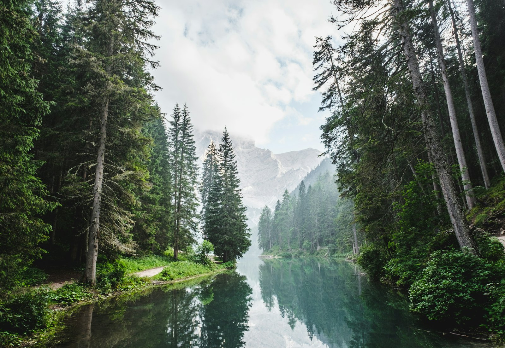
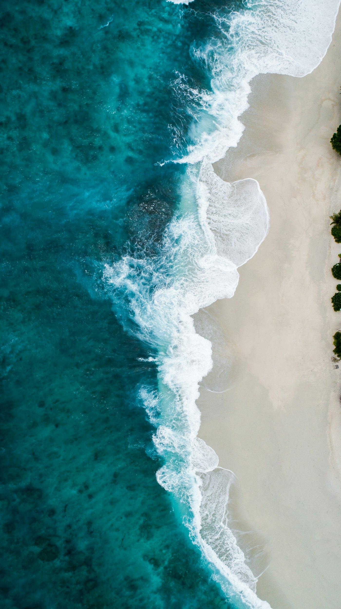

About
Driven by a passion for the Earth.
Topography Consulting was founded to protect what we explore, and to preserve it for the generations who will explore it next.

Founder
Marcie M. Merksamer
Trained as an environmental biologist, Marcie has worked on aquatic invasive species and ballast water management for 26 years, 24 of them as an independent environmental consultant in the maritime sector.
Much of her ballast water work has involved helping clients obtain approvals for ballast water management systems (BWMS) through classification societies and international administrations. In managing those approvals she has carried out extensive research on aquatic toxicology for chemical-based systems, performed environmental and human health risk assessments of chemical disinfection by-products, and handled complex agency interactions, dossier preparation and data analysis.
She knows the logistics of scientific BWMS testing on board ships, as well as system operation, maintenance, crew interaction and crew training. Marcie now applies that expertise to current developments in the biofouling management sector. A primary goal in her work is to build productive working relationships among scientists, technology developers, industry and regulators.
Credentials
A record built over decades.
Experience that spans technical, regulatory and industry-association work, at home and at the IMO.
- CurrentOwner & FounderTopography Consulting LLC
- Since 2018Secretary-General & Co-founderBiosecurity & Environmental Marine Association (BEMA), a non-profit, technically based association with Consultative Status at the IMO. Marcie represents BEMA on the delegation to the IMO.
- 2002 – presentCo-founder & former Vice PresidentEnviroManagement, Inc., an environmental services and consulting company
- EducationB.S., Biological SciencesConcentration in Environmental Science, California Polytechnic State University, San Luis Obispo

The ocean’s surface has a topography too, in every swell and ripple.Land · Sea · Everything between
The name
It’s all about exploration.
Nature, planet Earth, exploration and adventure. From the mountains to the sea and every environment in between, this planet is endlessly fascinating, and worth protecting, exploring and preserving for future generations.
Marcie still plans her explorations on old-school paper maps and charts, on land and at sea. Their lines show where the peaks and valleys lie, how hard the climb will be, where the coastline offers safe harbor and how deep the trenches run. They also show that there is always more than one way to reach a destination.
Many people think of topography only on land, but the ocean’s surface has one too: the peaks and valleys of waves and the ripples drawn by wind and current. The name is a reminder that the journey continues, wherever it leads.
“We’ve done everything from the boiler suit to the business suit.”Marcie Merksamer
“No problems; only solutions.”A guiding principle
Start a conversation
Let’s chart the path together.
Tell us about the vessel, the system or the regulation in front of you. Every engagement starts with listening.